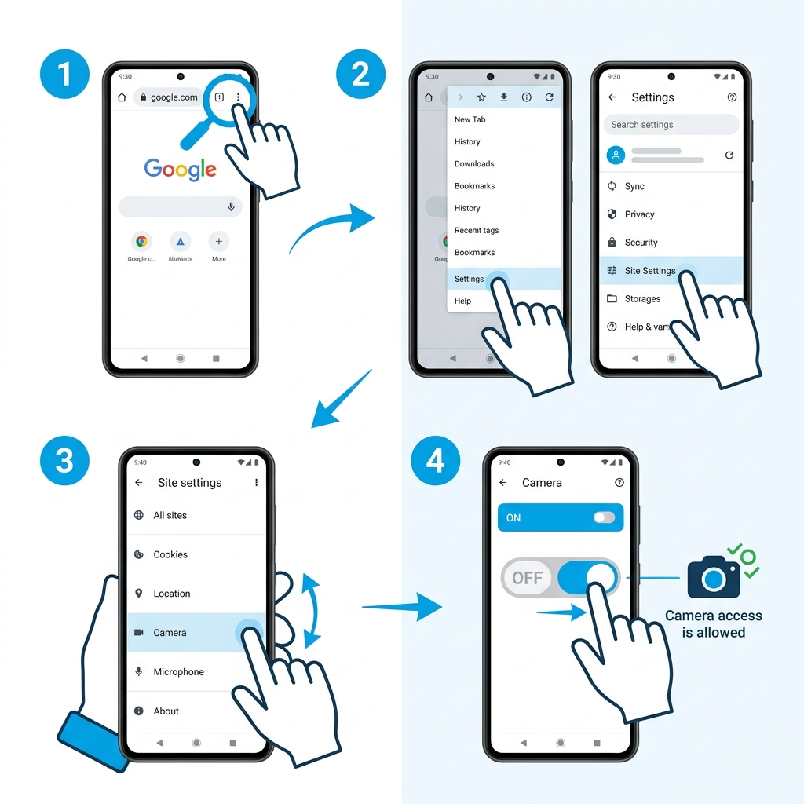
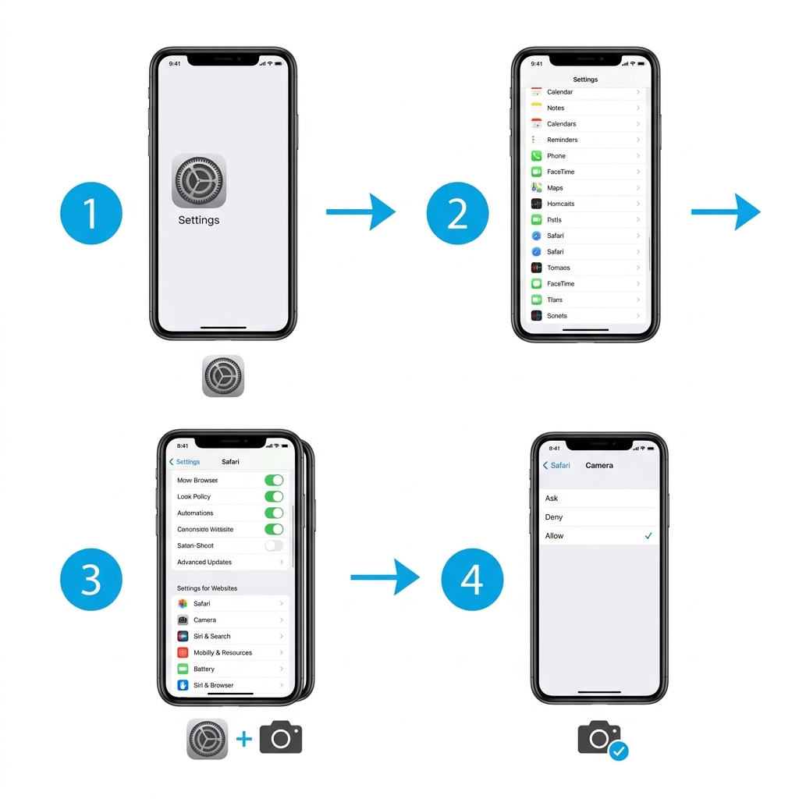

Follow these simple steps to allow camera access on your phone for seamless attendance check-in. Takes less than 1 minute!
Before going through the full steps, try these quick fixes:
When you click "Check-In", your browser will show a popup asking "Allow camera access?". Tap "Allow".
Tap the lock icon 🔒 (or ⓘ) in your browser's address bar → Find "Camera" → Change to "Allow" → Reload the page.
If another app (WhatsApp Video, Instagram, etc.) is using the camera, close it first, then try again.

Open Google Chrome on your Android phone. Tap the three dots (⋮) menu at the top-right corner.
In the menu, tap Settings → Scroll down and tap Site Settings.
Inside Site Settings, find and tap Camera. You will see the camera permission toggle.
Make sure the toggle is ON (blue). If our website is listed under "Blocked", tap on it and change to "Allow".

Go to your iPhone's home screen and open the Settings app (⚙️ gear icon).
Scroll down in Settings and tap Safari.
Scroll down in Safari settings to find "Settings for Websites" section. Tap Camera.
Change the camera setting to "Allow". This will let Safari access your camera for attendance photo.
In Chrome's address bar, click the lock icon (🔒) or ⓘ icon on the left side of the URL.
A dropdown will appear. Find "Camera" in the list of permissions.
Click the dropdown next to Camera and select "Allow".
Refresh the page by pressing Ctrl + R (or Cmd + R on Mac). Now try checking in again.
If your camera is still not working, you can use the "🌐 Web Check-In" button on your Employee Dashboard. This will mark your attendance without a photo, using your IP address for location verification.